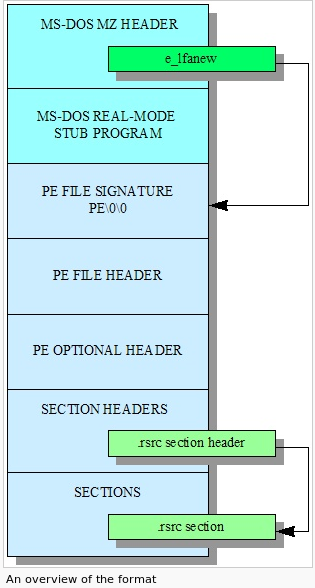

Overview
Overview
The PE file consists of several parts. They are briefly sumarized below, then more detail is entered on each part. Here are the definitions for the field types. PE files are stored in little-endian order, the same byte order as an x86.
